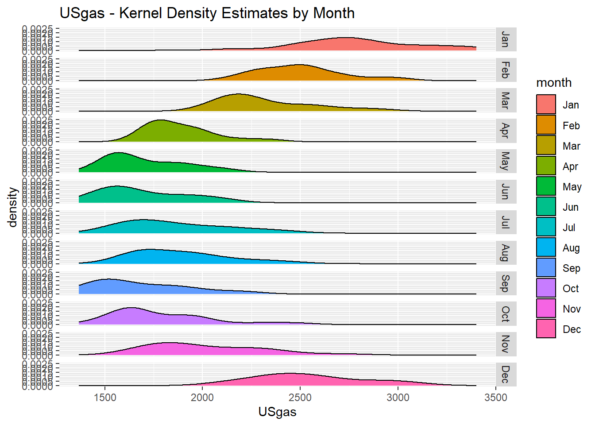
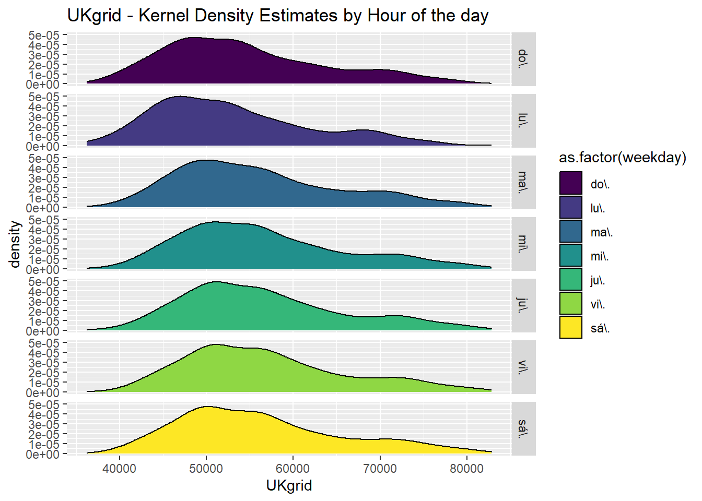
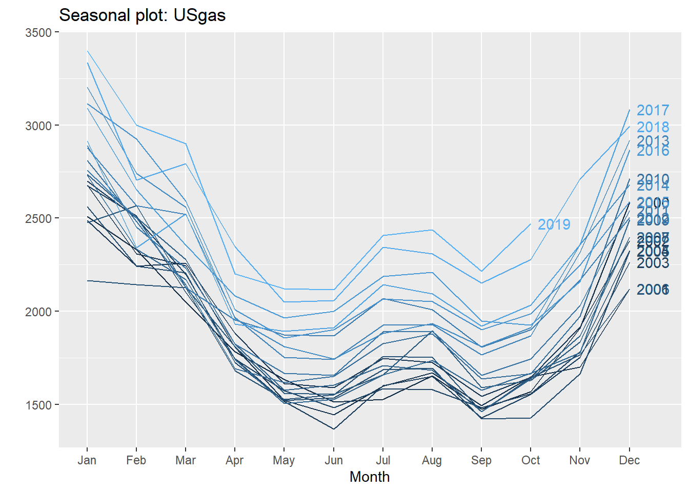
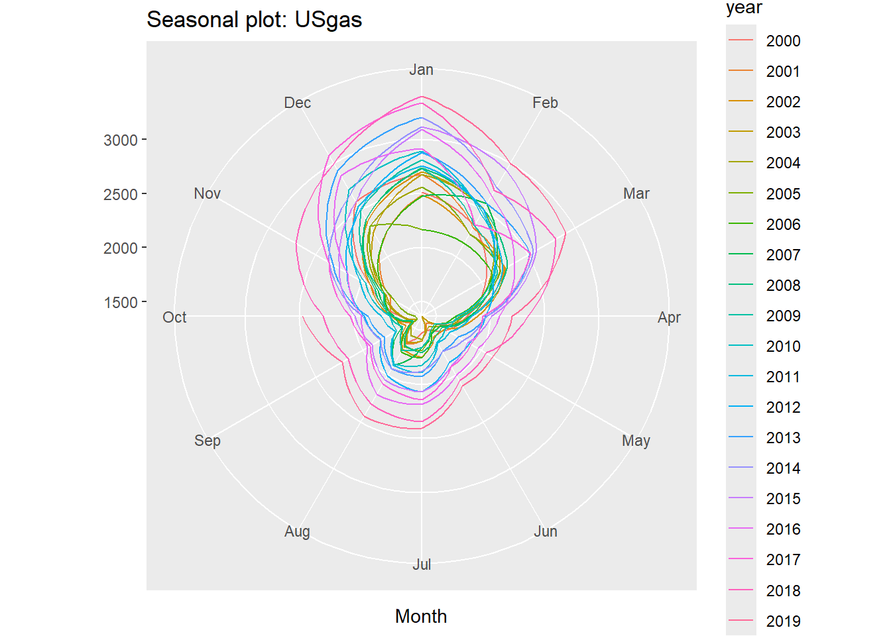

Seasonality is one of the main components of time series data. Furthermore, this component, when existing in a series, plays a pivotal role in the forecasting process of the future values of the series, since it contains structural patterns.
A seasonal pattern exists in a time series whenever we can tie a repeated event in the series to a specific frequency unit, for example, the average temperature in New York during the month of January, or the average number of passengers in the London underground between 8 a.m. and 9 a.m. Hence, there is a strong relationship between seasonal pattern and the frequency of the series.
35.1 Type of Seasonality
When seasonality exists in the time series data, we can classify it into one of the following categories:
Single seasonal pattern: Whenever there is only one dominant seasonal pattern in the series. As the frequency of the series is lower (for example, monthly, quarterly, and so on), it is more likely to have only one dominant seasonal pattern as opposed to a high-frequency series, as there are fewer aggregation options for another type of frequencies.
Multiple seasonal patterns: If more than one dominant seasonal pattern exists in the series. This type of patterns are more likely to occur whenever the series has a high frequency (for example, daily, hourly, half-hourly, and so on), as there are more options to aggregate the series to a lower frequency. A typical example of multiple seasonality is the hourly demand for electricity, which could have multiple seasonal patterns, as the demand is derived from the hour of the day, the day of the week, or the yearly patterns, such as weather or the amount of daylight throughout the day.
Example:
# USgas dataset represents the total monthly consumptions of naturalgas in the US since # January 2000library(TSstudio)data(USgas)ts_info(USgas)
The USgas series is a ts object with 1 variable and 238 observations
Frequency: 12
Start time: 2000 1
End time: 2019 10
35.2 Seasonal Analysis with Descriptive Statistics
Descriptive statistics are a simple yet powerful method to describe the key statistical characteristics of the data. This method is based on the use of summary statistics tables and is a summary of the key statistical indicators, such as the mean, median, quantile, and standard deviation, and data visualization tools, such as box plots and bar charts.
Descriptive statistics can be used to describe the characteristics of the frequency units of a series. This allows us to identify whether we can segment each period of the series by some statistical criteria, for example, the mean, the quantile range, and so on.
Example:
# We group the USgas series by its frequency units and then summarize the mean and # standard deviation of each frequency unit# Transform the ts object to data.frame objectUSgas_df <-data.frame(year =floor(time(USgas)), month =cycle(USgas),USgas =as.numeric(USgas))# Set the month abbreviation and transforming it to a factorUSgas_df$month <-factor(month.abb[USgas_df$month], levels = month.abb)head(USgas_df)
year month USgas
1 2000 Jan 2510.5
2 2000 Feb 2330.7
3 2000 Mar 2050.6
4 2000 Apr 1783.3
5 2000 May 1632.9
6 2000 Jun 1513.1
# Summarize the series by its frequency unitslibrary(dplyr)USgas_summary <- USgas_df %>%group_by(month) %>%summarise(mean =mean(USgas), sd =sd(USgas))USgas_summary
# A tibble: 12 × 3
month mean sd
<fct> <dbl> <dbl>
1 Jan 2806. 309.
2 Feb 2502. 223.
3 Mar 2325. 241.
4 Apr 1886. 175.
5 May 1708. 194.
6 Jun 1691. 216.
7 Jul 1864. 261.
8 Aug 1889. 237.
9 Sep 1687. 242.
10 Oct 1788. 260.
11 Nov 2015. 284.
12 Dec 2543. 278.
# Now we plot the summarylibrary(plotly)plot_ly (data = USgas_summary, x =~ month, y =~ mean, type ="bar", name ="Mean") %>%layout (title ="USgas - Monthly Average", yaxis =list(title ="Mean",range =c(1500, 2700)))
From the summary statistic table of the series you can see that, on average, each month is different from the next consecutive month by its standard deviation with the exception of the two pairs May/June and July/August, which are relatively close to each other. This allows us to characterize some months with a distinct behavior from the rest, such as January, February, March, and November.
The first indication for the potential existence of multiple seasonal patterns in the series is a high frequency, such as daily, hourly, and minutely. In those cases, there is more than one way to set the frequency of the series.
Example:
# UKgrid is an hourly time series, which marks it automatically as a suspect of# having multiple seasonal patternslibrary(xts)library(UKgrid)# Transform the series from a half-hourly frequency to hourly and will use an xts # formatUKgrid_xts <-extract_grid(type ="xts", columns ="ND", aggregate ="hourly", na.rm =TRUE)
The national demand of the UK high-voltage electric power transmission network (or the UKgrid series) has a strong seasonal pattern.
# Transform the UKgrid series into data.frame formatUKgrid_df <-data.frame(time =index(UKgrid_xts), UKgrid =as.numeric(UKgrid_xts))str(UKgrid_df)
'data.frame': 127296 obs. of 2 variables:
$ time : POSIXct, format: "2005-04-01 00:00:00" "2005-04-01 01:00:00" ...
$ UKgrid: num 65080 68207 69172 66769 64660 ...
# Create seasonal features based on the periods we wish to checklibrary(lubridate)UKgrid_df$hour <-hour(UKgrid_df$time)UKgrid_df$weekday <-wday(UKgrid_df$time, label =TRUE, abbr =TRUE)UKgrid_df$month <-factor(month.abb[month(UKgrid_df$time)], levels = month.abb)head(UKgrid_df)
# Summarize the series by its hourly cycleUKgrid_hourly <- UKgrid_df %>% dplyr::group_by(hour) %>% dplyr::summarise(mean =mean(UKgrid, na.rm =TRUE), sd =sd(UKgrid, na.rm =TRUE))# Use the summary statistics table to plot both the hourly mean and its standard# deviationplot_ly(UKgrid_hourly) %>%add_lines(x =~ hour, y =~ mean, name ="Mean") %>%add_lines(x =~ hour, y =~ sd, name ="Standard Deviation", yaxis ="y2",line =list(color ="red", dash ="dash", width =3)) %>%layout(title ="The UK Grid National Demand - Hourly Average vs. StandardDeviation",yaxis =list(title ="Mean"),yaxis2 =list(overlaying ="y",side ="right",title ="Standard Deviation"),xaxis =list(title="Hour of the day"),legend =list(x =0.05, y =0.9),margin =list(l =50, r =50) )
Looking at the plot of the preceding summary statistic table, we can see the following behavior of the series:
There is low demand during the nighttime (between midnight and 6 a.m.) and high demand between the morning hours and early evening.
There is a strong correlation between the average demand and its standard deviation.
The relatively low standard deviation of the demand average during the nighttime could indicate that there is strong sub-seasonal effect during those hours beside the hourly seasonality. This should make sense, as those are normal sleep hours, and therefore, on average, the demand is reasonably the same throughout the weekdays.
On the other hand, the high standard deviation throughout the high-demand hours could indicate that the demand is distributed differently on different periodicity views (such as weekday or month of the year).
To examine the last point, we will subset the series into two groups representing the demand in the middle of the night and the demand throughout the day (3 a.m. and 9 a.m., respectively), and then we will group them by the weekday:
Example:
UKgrid_weekday <- UKgrid_df %>% dplyr::filter(hour ==3| hour ==9) %>% dplyr::group_by(hour, weekday) %>% dplyr::summarise(mean =mean(UKgrid, na.rm =TRUE), sd =sd(UKgrid, na.rm =TRUE))UKgrid_weekday$hour <-factor(UKgrid_weekday$hour)plot_ly(data = UKgrid_weekday, x =~ weekday, y =~ mean, type ="bar",color =~ hour) %>%layout(title ="The Hourly Average Demand by Weekday", yaxis =list(title ="Mean", range =c(30000, 75000)), xaxis =list(title ="Weekday"))
You will see in the preceding bar chart that the demand for electricity at 3 a.m. is relatively stable throughout all the days of the week, with a slight difference between the average during the weekdays and the days in the weekend (about 2% different). On the other hand, there is a significant difference between the weekday and weekend demand at 9 a.m. (that is, the demand on Monday is higher on average by 28% from the one on Sunday).
35.3 Seasonal Analysis with Density Plots
Another approach for analyzing seasonal patterns in time series data is by plotting the distribution of the frequency units by using histogram or density plots. This will allow us to examine whether each frequency unit has a unique distribution that can distinguish it from the rest of the units.
Example:
# Plot the density of each of the USgas months library(ggplot2)ggplot(USgas_df, aes(x = USgas)) +geom_density(aes(fill = month)) +ggtitle("USgas - Kernel Density Estimates by Month") +facet_grid(rows =vars(as.factor(month)))

The shape of the density plot of each month provides us with insights about the characteristics of each month (or frequency unit). We can see some indication of a seasonal pattern series, as the density plots are not overlapping on each other (with the exception of some consecutive months, such as May and June).
Now let’s subset one of the hours during the day in the UKgrid dataset and plot its distribution by the day of the week. We should expect an overlapping during the nighttime and be able to distinguish between the distribution during the weekdays and weekend, as opposed to just the weekday.
Example:
# Plot represents the distribution of the demand at 9 a.m. throughout the days of the # weekUKgrid_df$weekday <-as.factor(UKgrid_df$weekday)UKgrid_df %>% dplyr::filter(hour ==0) %>%ggplot(aes(x = UKgrid)) +geom_density(aes(fill =as.factor(weekday))) +ggtitle("UKgrid - Kernel Density Estimates by Hour of the day") +facet_grid(rows =vars(as.factor(weekday)))

You can see that the distribution during the weekdays is distinguished from the one at the weekend.
35.4 Seasonal Analysis with the Forecast Package
The forecast package provides several functions for seasonal analysis based on the ggplot2 package graphics engine (and the base plot function) and it supports the ts objects. The ggseasonplot function creates a seasonal plot of the series by splitting and plotting each year as a separate line. This allows the user to obtain the changes in the series from year to year.
Example:
# Create the seasonal plot of the USgas serieslibrary(forecast)ggseasonplot(USgas,year.labels=TRUE,continuous=TRUE)

ggseasonplot(USgas, polar =TRUE)

We can learn from this representations of the USgas series that the series has a strong repeated pattern, which indicates the existence of the monthly seasonal pattern. Furthermore, as you can see from the color scale and the years labels, the series is growing from year to year. In the polar representation of the USgas series that the series has repeated seasonal patterns along with a year-to-year growth or trend.
35.5 Seasonal Analysis with the TSstudio Package
The TSstudio package provides a set of interactive data visualization functions based on the plotly package engine for seasonal analysis. It supports multiple time series objects, such as ts, xts, zoo, and data frame objects (data.frame, data.table, and tbl).
The ts_seasonal function provides several types of seasonal plots. The type argument sets the type of plot. The default option of the type argument is normal, which provides a similar seasonal plot as the ggseasonplot function:
Example:
ts_seasonal(USgas,type ="normal")
ts_seasonal(USgas, type ="cycle")
The cycle option group plots the series frequency units over time in chronological order; for example, all the observations that occurred during January over a certain amount of time for a monthly series. This allows us to identify seasonal pattern without de-trending the series. For instance, in the following plot of the USgas series, you can see that, despite the growth from year to year, in most of the cases the order of the months (from high to low) remains the same:
Example:
ts_seasonal(USgas, type ="cycle")
The box option provides a box plot representation for each frequency unit. The box plot can be very informative plot, as it provides the range and quartile representation of the observations of each frequency unit:
Example:
ts_seasonal(USgas,type ="box")
The all option returns a plot of all of the three plots (normal, cycle, and box) side by side. This allows you to connect the information from the three different representations of the series to get a better understanding of the patterns (if any exist) and characteristics of the series:
Example:
ts_seasonal(USgas,type ="all")
The ts_heatmap function returns a heatmap plot of the time series object where the y-axis represents the frequency units (the months, for example, in the case of a monthly series) and the x-axis represents the cycle units of the series (the years, for example, in the case of a monthly series). The magnitude of each observation is represented by the color scale of the map, so the darker it is, the higher the value of the observation with respect to the overall values of the series:
Example:
ts_heatmap(USgas, color ="Reds")
Last but not least, the ts_quantile function provides a visual of the quantile plot of time series data. It’s mainly useful on high-frequency time series data, such as hourly or daily. By default, the function returns a quantile plot of the series frequency units, where the middle line represents the median and the lower and upper lines represent the 25th and 75th percentiles.
Example:
# Visualize the 24 cycles of the UKgrid datasetts_quantile(UKgrid)